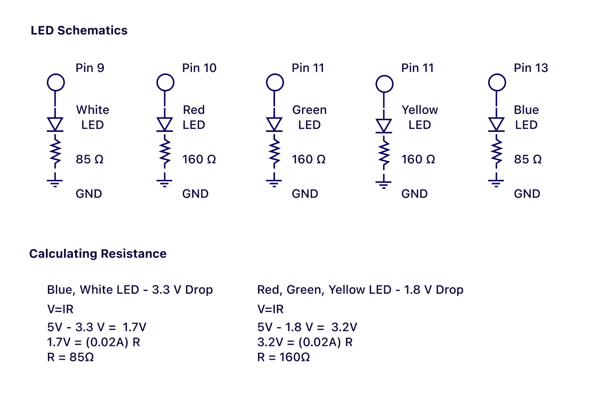

FADEe...

caption
Assignment
For this assignment, I connected five LED's to a button on my breadboard.
When the button is pressed, the LED's will light one-by-one each for 200 milliseconds.
The LED lights light up in the following order – blue, yellow, green, red and white.
*For this assignment's documentation, I am focusing on the LED functions, less so the button. I added the button for fun!*
The Schematic

This is the schematic for my LED blinking. I have connected the 5 LEDs on the Arduino pins 9 to 13. I am using Ohm's Law, V=IR, to calculate the resistance needed for 20 mA curent to flow through each of the LEDs. I have done two calculations for the two voltage drops that are seen in the LED lights. Blue and white see a 3.3V drop, while red, yellow, and green see a 1.8V drop. Because I do not have resistors with the exact values 85 and 160 ohms, I used 100 ohms and 220 ohm respectively.
The Code
const int R = 11;
const int G = 10;
const int B = 9;
const int W = 8;
void setup() {
Serial.begin(9600); // initialize serial communication at 9600 bits per second
pinMode(R, OUTPUT);
pinMode(G, OUTPUT);
pinMode(B, OUTPUT);
pinMode(W, OUTPUT);
}
// the loop routine runs over and over again forever
void loop() {
int sensorValue = analogRead(A0); // read the analog in value
int outputValue = map(sensorValue, 500, 900, 255, 0); // map it to the range of the analog out
while(sensorValue < 700){
digitalWrite(W, LOW);
for(int i = 0; i < 256 && sensorValue < 700;i+=10){
sensorValue = analogRead(A0);
analogWrite(B, i);
delay(100);
}
for(int i = 0; i < 256 && sensorValue < 700;i+=10){
sensorValue = analogRead(A0);
analogWrite(G, i);
delay(100);
}
for(int i = 0; i < 256 && sensorValue < 700;i+=10){
sensorValue = analogRead(A0);
analogWrite(R, i);
delay(100);
}
}
digitalWrite(W, HIGH);
analogWrite(R, 0);
analogWrite(B, 0);
analogWrite(G, 0);
}
This is the code I used to develop the behavior I wanted. See the comments in the code for further explanations.
Lights out, party time!

Turn on the lights for a focused, white light; turn out the lights for party-like fading lights!